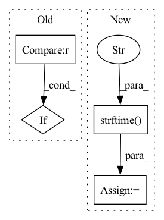

Pattern ID :24962
Before Change
if interval == self.INTERVAL_quarterly:
_result = self._get_data_from_baostock(symbol, interval, start_datetime, end_datetime)
if _result is None or _result.empty:
return _result
else:
return self._process_data(_result, symbol, interval)After Change
exchange = "sh" if exchange == "ss" else "sz"
code = f"{exchange}.{symbol}"
start_date = start_datetime.strftime("%Y-%m-%d")
end_date = end_datetime.strftime("%Y-%m-%d" )
performance_express_report_df = self.get_performance_express_report_df(code, start_date, end_date)
profit_df = self.get_profit_df(code, start_date, end_date)
forecast_report_df = self.get_forecast_report_df(code, start_date, end_date)
growth_df = self.get_growth_df(code, start_date, end_date)
df = pd.concat(
[performance_express_report_df, profit_df, forecast_report_df, growth_df],
axis=0,
)In pattern: SUPERPATTERN
Frequency: 3
Non-data size: 4
Instances Fragment ID: 76798611
Project Name: microsoft/qlib
Commit Name: 8efc8b92ef1ec4abb27cc70502a19aafc383c023
Time: 2022-03-18
Author: 32626585+Chaoyingz@users.noreply.github.com
File Name: scripts/data_collector/pit/collector.py
M Class Name: PitCollector
N Class Name: PitCollector
M Method Name: get_data(5)
N Method Name: get_data(5)
M Parent Class: BaseCollector
N Parent Class: BaseCollector
M File Name: scripts/data_collector/pit/collector.py
N File Name: scripts/data_collector/pit/collector.py
M Start Line: 271
M End Line: 278
N Start Line: 202
N End Line: 217
Before Change
event_name = event.xpath(".//td[@class="left event"]/a/text()").extract_first()
event_name = event_name.strip(" \r\n\t ")
if event_name not in self.event_list :
continue
print("EVENT NAME: ", event_name)After Change
event_datetime = datetime.strptime(datetime_str, "%Y/%m/%d %H:%M:%S")
event_datetime = event_datetime.replace(tzinfo=time_zone["EST"])
current_dt_str = datetime.strftime( self.current_dt, "%Y/%m/%d %H:%M:%S" )
// Return only events that passed
if not self.current_dt >= event_datetime:
continue Fragment ID: 76798610
Project Name: radoslawkrolikowski/financial-market-data-analysis
Commit Name: 00f584045cdbb48c22007e66bd89ccbb5b6a1163
Time: 2019-12-09
Author: root@localhost.localdomain
File Name: economic_indicators_spider.py
M Class Name: EconomicIndicatorsSpiderSpider
N Class Name: EconomicIndicatorsSpiderSpider
M Method Name: parse(2)
N Method Name: parse(2)
M Parent Class: Spider
N Parent Class: Spider
M File Name: economic_indicators_spider.py
N File Name: economic_indicators_spider.py
M Start Line: 57
M End Line: 62
N Start Line: 82
N End Line: 127
Before Change
Args: objects_list: A list of dictionary where each dictionary stores information of an object (person) in a
frame. frame_number: current frame number file_path: log file path
if len(objects_list) != 0 :
object_dict = list(map(lambda x: prepare_object(x, frame_number), objects_list))
if not os.path.exists(file_path):After Change
frame. frame_number: current frame number file_path: log file path
now = datetime.now()
current_time = now.strftime("%Y-%m-%d %H:%M:%S" )
file_exists = os.path.isfile(file_path)
with open(file_path, "a") as csvfile:
headers = ["Timestamp", "DetectedObjects"]
writer = csv.DictWriter(csvfile, fieldnames=headers) Fragment ID: 76798606
Project Name: neuralet/smart-social-distancing
Commit Name: 9f483c8d68c875799eb3fd0ef3f0ea0894f37912
Time: 2020-04-16
Author: mehraliangit@gmail.com
File Name: libs/loggers/csv_logger.py
M Class Name: Logger
N Class Name: Logger
M Method Name: log_objects(3)
N Method Name: log_objects(3)
M Parent Class:
N Parent Class:
M File Name: libs/loggers/csv_logger.py
N File Name: libs/loggers/csv_logger.py
M Start Line: 90
M End Line: 104
N Start Line: 94
N End Line: 107